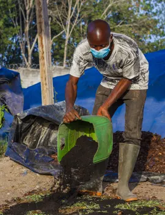

Fournir de l’engrais organiques et des biopesticides pour une production respectueuse de l’environnement
Pour soutenir la production de fèves de cacao certifiées et maîtriser toute la chaîne d’approvisionnement, l’Entreprise Coopérative Agricole Koognanan de Grogouya a pris les dispositions pour fournir à ses producteurs des intrants biologiques afin d’améliorer la fertilité des sols, le traitement des vergers et la qualité des fèves récoltées et ainsi obtenir un prix plus rémunérateur grâce aux débouchés sur le marché.
ECAKOOG, soutenu par le programme Équité 2 et d’autres initiatives a pu mettre en place un ensemble d’éléments.
Nos Actions Clés
- Mise en place d'une bio-fabrique (2 hangars)
- Production et vente d'intrants bio à moindre coût
- Expérimentation du système agroécologique
Témoignage

Producteur
"Mon exploitation a complètement changé. Elle a été régénérée grâce aux bonnes pratiques agricoles et environnementales. Le rendement a augmenté, et j’ai de meilleurs prix. Cela nous a beaucoup aidés. Grâce à Ecakoog, j’ai retrouvé ma vie."

